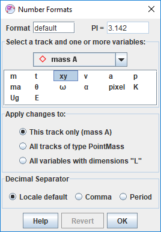
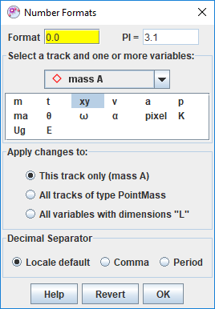
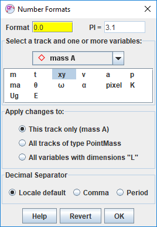
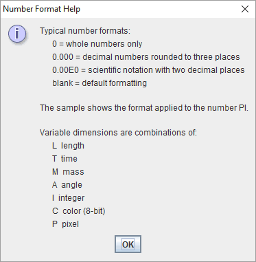

User Interface
1. Main view
Each Tracker tab, like "Untitled" above, displays the following components:
- A main video view that displays video images with track overlays. The video view has a fixed, stable video image. Tracks are marked and edited in the video view.
- A menu bar that offers access to most program commands and settings. Some menu items include icons showing which toolbar buttons perform identical actions.
- A toolbar, displayed directly below the menu bar, that offers quick access to frequently used controls, calibration and measuring tools, and track settings.
- A player that controls the video playback and video clip settings.
- Additional views in attached view panes, each with its own toolbar. Open, close or resize a view by clicking or dragging the thin dividers between panes or by selecting the desired view from the Window menu. Maximize or restore a view by clicking its Maximize button
 or double-clicking its toolbar.
or double-clicking its toolbar.
2. Toolbar

The order of the buttons on the main toolbar closely match the steps used to analyze a video. Buttons include (from left to right):
- Open button opens a local video or tracker file in a new tab.
- Save Tab button saves the current tab in a Tracker file (TRK).
- Open Library Browser button opens the OSP Library Browser for easy access to local and web-based videos, Tracker tabs and Tracker projects.
- Save Project button opens a dialog for building and saving Tracker projects (TRZ).
- Clip Settings button shows and hides the clip inspector.
- Calibration button shows and hides calibration sticks, calibration points and offset origins.
- Axes button shows and hides the coordinate axes.
- Track button shows and hides the track control used to create and manage tracks in the current tab.
- Autotracker button shows and hides the autotracker.
- Visibility button opens a menu to control the visibility of track trails, labels, paths, positions, velocities and accelerations.
- Measurement button shows and hides measuring tools like tape measures, protractors and circle fitters.
- Zoom button displays and sets the magnification. You can also zoom by right-clicking or using the mouse wheel.
- Font Size button controls font and icon sizes.
Buttons near the right end of the toolbar control documentation tools, memory status and data refresh:
- Drawing button shows and hides the drawing control for annotating the video with line drawings and labels.
- Documents button displays support documents (HTML, PDF etc) associated with a Tracker project. Hidden when no support documents are available.
- Notes button shows and hides the notes window for user descriptions of tracks and tabs.
- Memory button manages and monitors Tracker's memory status. Hover over the button to see the current memory use in the tooltip.
- Refresh button refreshes track data and views and turns auto-refresh on and off.
3. Additional views

Here a particle model track has been added and the split panes have been opened to display all view types and their toolbars.
- The main video view (pane 0--top left) displays the video and tracks in video space. The video view keeps the video fixed (in this case a white background) but permits the axes to tilt. The toolbar displays a Select Track or Tool button
 along with data and input fields for the selected track or tool, if any.
Click this button and choose a track or tool to select and display it..
along with data and input fields for the selected track or tool, if any.
Click this button and choose a track or tool to select and display it..
- The plot view (pane 1--top right) displays one or more graphs of track-generated data. Multiple graphs are stacked vertically. For more, see Plot View.
- The table view (pane 2--bottom right) displays a table of track-generated data. For more, see Datatable View.
- The world view (pane 3--bottom center) displays the video and tracks in world space. The world view keeps the axes fixed (with the x-axis pointing right), so the video is tilted.
- The page view (pane 4--bottom left) displays text and html pages. For more, see Page View.
Except for the main video view, any view pane can display any type of view. To select a desired view type, click the view chooser button at the left end of a view toolbar and choose from the drop-down list.

4. Support documents
Tracker project files may contain support documents such as instructions, reports, etc. that are not displayed in Tracker itself but instead in a separate desktop application. These documents are called support files.
All support files are opened on the desktop when the Tracker project is opened. HTML files are displayed in the user's default web browser and PDF files in the user's default PDF viewer.
A Documents button is displayed on the toolbar whenever support files or page view HTML files are available for viewing on the desktop. To open (or re-open) a file, click the Documents button and choose the name of the document from the popup list.
5. Hints
By default, Tracker displays hints in a yellow box at the bottom right corner of the main view. Hints are very useful for new and occasional users of Tracker. Experienced users can turn off hints by unchecking the Show Hints checkbox in the Help menu or in the Display tab of the preferences dialog.

6. Font sizing
The Font Size determines the size of both fonts and icons. In most cases, the default font size is best, but larger fonts are often useful when making a presentation or using a high screen resolution. To change the font size click the Font Size button or Edit|Font Size menu and choose the desired size from the popup menu. The current size is shown in green. You can also set a preferred font size in the Display tab of the preferences dialog.
7. Number formats
Real numbers displayed on the toolbar or in datatables may be formatted using either decimal or scientific notation. For scientific notation, the letter E is used to mean "times 10 to the power of" so the number 1.3 x 10^3 is written 1.3E3. By default, the choice of decimal or scientific notation and number of decimal places varies based on the magnitude of the number.
It is often desirable to set a fixed format for some variables in order to make reading and comparing values easier. You can do this using the Number Formats dialog.
To open the Number Format dialog right-click a text field or datatable and select Numbers|Formats... from the popup menu. In the dialog, select the track and names of the variables you wish to format. Use the shift and control keys to add or remove names from the selection. Enter the desired format into the format field to apply it to the selected variables. The sample field shows the result of the format applied to the number PI. Changes are also seen immediately wherever the variables are displayed.
To apply format pattern changes to all tracks of the same type, select All tracks of type X.
To apply changes to all variables with the same dimensions, select All variables with dimensions "X". This is a very fast way to apply the same pattern to all length and position variables in all tracks (dimension "L"), for example.
The decimal separator character is normally locale-dependent. For example, a period is used in the US and a comma is used in Europe. However, you can override the locale default by selecting period or comma at the bottom of the Number Formats dialog. You can also set a preferred decimal separator in the Display tab of the Tracker Preferences.

 

Click the Help button to display sample formats and dimension definitions.

8. Background mat
The background mat is a white area normally hidden behind the video. It is never smaller than the video, but may be made larger if desired by choosing from the Edit|Mat Size menu. A larger mat size increases the area that is drawn in the video and world views. This is useful when some of a track's steps, or the axes, would otherwise be drawn offscreen--a common situation when using particle model tracks, calibration point pairs or offset origins.
9. Languages
Select a language other than that of the default locale by choosing from the Edit|Language menu or in the Display tab of the preferences dialog.
If your preferred language is not available, and you wish to provide a translation, please contact Douglas Brown at dobrown at cabrillo dot edu.
10. Undo and redo
Most operations in Tracker can be undone and redone using the Undo and Redo items in the Edit menu. There is no limit to the number of undo actions.
11. Memory management
By default Tracker has at least 64MB of memory available (machine-dependent), enough to handle most moderate-sized videos. But when analyzing large or multiple videos, or long image sequences, additional memory will likely be needed. The memory manager button near the right end of the toolbar displays information about the current memory status in the tooltip when you hover over it with the mouse. The button icon turns red when the current memory limit is approached.
To increase the memory available to Tracker, click the memory manager button and select Select memory size.

12. Tracker Preferences
The preferences dialog enables a user to set the configuration and other properties of Tracker. These preferences are saved in a ".tracker.prefs" file that is automatically read every time Tracker starts. To display the preferences dialog, choose the Edit|Preferences menu item or type control-enter (cmd-enter on Mac). To relaunch Tracker immediately with changed preferences, click the Relaunch Now button.

Set preferences in the following tabs:
- Runtime tab
- Select a preferred Tracker version from the dropdown list or choose default to use the most recently installed version.
- Select a preferred Java Virtual Machine in which to run Tracker or choose default to use the bundled Java VM.
- Set a preferred memory size or check the Use default checkbox to accept the default size (varies with platform and available RAM).
- Enter or select one or more optional executable files to be executed prior to starting Tracker.
- Display tab
- Select a preferred language from the dropdown list.
- Set the default angle units to degrees or radians.
- Check the Show hints by default checkbox to show hints on startup.
- Set the decimal separator to period, comma or default (varies with locale).
- Select a preferred font size from the dropdown list.
- Video tab
- Set the mouse wheel action to Zoom (magnify the video) or Scrub (move along the video timeline). Hold down the control key to switch to the alternate action.
- Select the playback option faster, jerkier or smoother, slower for videos opened with Xuggle.
- Check the boxes to display warning dialogs when no video engine is found, non-fatal Xuggle errors occur, or frame durations are not constant.
- Tracks tab
- Check the Auto-reset to step 0 box to reset the video to step 0 when creating a new point mass, vector or rgb region.
- Select to mark new calibration sticks and tapes either manually with the mouse or automatically centered in the current view.
- Check the Show in tables box to show data gaps in red in datatables by default.
- Check the Enable autofill box to enable filling data gaps automatically using linear interpolation.
- General tab
- Set the preferred number of files displayed in the File|Open Recent menu, or clear the current menu items.
- Set a preferred cache directory for downloaded web files, browse the cache in a file browser, or clear some or all cache files.
- Set the startup level for the Message Log. Set the level to ALL for detailed trouble-shooting.
- Select a preferred interval to automatically check for upgrades or click the Check Now button to check immediately.
- Configuration tab. The "configuration" refers to the menus, buttons and other user interface features included in Tracker. By unchecking items in the configuration tab, you can hide unwanted features. This is particularly useful when introducing students to Tracker for the first time. As they gain familiarity with the program, additional features can be displayed as needed.
- Check the config.saveWithData item to save customized configurations in the tracker data file (.trk) when a Tracker tab is saved. A configuration saved in a trk file will override the default configuration when the tab is loaded.
- Click the Save As Default button to use a configuration as the default for new tabs and tabs loaded from trk files without a custom configuration.